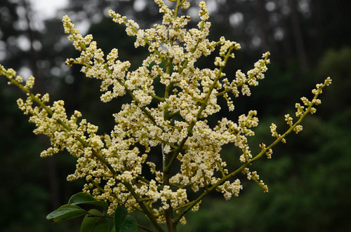

Sabiaceae
Sabia Family
Sabiaceae is a small family of trees, shrubs, or lianas (woody vines) found in tropical regions of Asia and the Americas. Key characteristics include alternate, simple or pinnately compound leaves lacking stipules (exstipulate), and small, often asymmetrical flowers typically possessing only two fertile stamens positioned opposite the inner petals, with the remaining stamens reduced to staminodes. The fruit is usually a drupe. Phylogenetically, Sabiaceae is placed in the order Proteales, representing an early-diverging eudicot lineage.
Overview
The Sabiaceae family consists of three genera (Sabia, Meliosma, Ophiocaryon) and roughly 100-160 species. Sabia consists mostly of lianas found in tropical Asia, while Meliosma includes trees and shrubs distributed across both tropical Asia and the Americas. Ophiocaryon contains just one or two species of trees in tropical South America, famous for the "snake nut" (O. paradoxum) whose seed writhes when heated due to the coiling embryo.
The family's classification was historically uncertain, sometimes placed near Ranunculales or Sapindales. However, molecular data revealed its true affinity lies within the order Proteales, as sister to the clade containing Nelumbonaceae (sacred lotus) and Platanaceae (plane trees). This placement makes Sabiaceae an important family for understanding the early evolution and diversification of eudicots.
Economically, the family is of minor importance, although some Meliosma species are used locally for timber or traditional medicine.
Quick Facts
- Scientific Name: Sabiaceae
- Common Name: Sabia Family
- Number of Genera: 3 (Sabia, Meliosma, Ophiocaryon)
- Number of Species: ~100-160
- Distribution: Tropical Asia and Tropical Americas.
- Evolutionary Group: Eudicots - Proteales
- Habitat: Tropical forests and woodlands.
Key Characteristics
Growth Form and Habit
Trees, shrubs, or lianas (woody vines).
Leaves
Leaves are arranged alternately and spirally. They can be simple (Sabia) or pinnately compound (Meliosma, Ophiocaryon). Leaf margins are entire or toothed. A key diagnostic feature is the complete absence of stipules (exstipulate).
Stems
Stems are woody.
Roots
Normal woody plant root system.
Sexuality and Inflorescence
Inflorescences are typically axillary or terminal panicles or cymes, often many-flowered. Flowers are usually perfect (bisexual), though sometimes functionally unisexual.
Flowers
Flowers are small, often greenish, yellowish, or whitish, and typically zygomorphic or asymmetrical. They are usually 4- or 5-merous.
- Calyx: Consists of 4 or 5 sepals, which are often unequal and fused at the base.
- Corolla: Consists of 4 or 5 petals, free, and often unequal in size or shape. The inner 2 petals are frequently smaller or differently shaped than the outer ones.
- Androecium (Stamens): Highly distinctive. There are typically 4 or 5 stamens in total, corresponding to the petal number, but usually only 2 stamens are fertile. These fertile stamens are characteristically positioned opposite the inner 2 petals (or petaloid staminodes). The remaining 2 or 3 stamens are reduced to sterile staminodes, which can be scale-like or petaloid, or they may be absent altogether. Fertile stamens often have complex shapes or appendages.
- Ovary: Superior, composed of 2 (rarely 3) fused carpels, forming a 2(-3)-locular ovary. Placentation is axile, usually with 1 or 2 ovules per locule. A single, often short style is present, with a small stigma.
Fruits and Seeds
The fruit is typically a drupe, often flattened or curved, sometimes resembling a samara or slightly splitting like a schizocarp. It usually contains 1 or 2 seeds. Seeds often have a characteristically curved or coiled embryo.
Chemical Characteristics
Plants are known to contain tannins and various alkaloids. They lack the betalains found in core Caryophyllales and the glucosinolates of Brassicales.
Field Identification
Identifying Sabiaceae involves looking for a combination of vegetative and floral features, particularly the unique stamen arrangement:
Primary Identification Features
- Habit: Tree, shrub, or liana in tropical Asia or Americas.
- Leaves: Alternate, simple or pinnately compound, lacking stipules.
- Flowers: Small, often asymmetrical, 4- or 5-merous.
- Stamen Arrangement: The most diagnostic feature (requires magnification): only 2 fertile stamens, positioned opposite the inner petals/petaloid structures, with other stamens reduced to staminodes or absent.
- Fruit: Drupe, often flattened or curved.
Secondary Identification Features
- Inflorescence: Panicles or cymes.
- Petals: Often unequal in size or shape.
- Seed Embryo: Often curved (requires dissection).
Seasonal Identification Tips
- Year-round Features: Habit, leaf arrangement (alternate), presence/absence of stipules (absent), and leaf type (simple/compound) are useful vegetative characters.
- Flowering Season: Varies by region. Close examination of the small flowers is necessary to observe the unique stamen arrangement.
- Fruiting Season: Drupes develop after flowering; their shape can be characteristic.
Common Confusion Points
Sabiaceae might be confused with members of other families based on vegetative features:
- Anacardiaceae (Cashew family): Often have alternate, pinnately compound leaves, but typically possess resin ducts (often visible as streaks or causing dermatitis), have different flower structures (usually 5 fertile stamens alternating with petals), and often have stipules absent but not consistently.
- Sapindaceae (Soapberry family): Frequently have alternate, compound leaves (pinnate or palmate), but flowers are often unisexual, typically zygomorphic with 8 stamens (not 2 fertile), and fruit is highly variable (capsule, schizocarp, berry, drupe). Stipules usually absent.
- Connaraceae: Mostly lianas or shrubs with alternate, compound (usually pinnate or trifoliate) leaves, lacking stipules. Flowers are 5-merous, usually actinomorphic with 10 stamens (often unequal lengths), and fruit is characteristically a follicle.
- Other families with alternate, exstipulate leaves: Many families fit this description; confirmation requires examining the unique floral structure (especially the androecium) of Sabiaceae.
The combination of alternate, exstipulate leaves (simple or compound) with the highly characteristic androecium (2 fertile stamens opposite inner petals/staminodes) is key to identifying Sabiaceae.
Field Guide Quick Reference
Look For:
- Tree/shrub/liana (Trop. Asia/Americas)
- Leaves alternate, simple or compound
- Exstipulate (no stipules)
- Flowers small, often asymmetrical
- 2 fertile stamens opposite inner petals
- 2-3 staminodes (or absent)
- Ovary superior, 2(-3) carpels
- Fruit a drupe (often flattened/curved)
Key Variations:
- Habit (tree/shrub vs liana)
- Leaf type (simple vs compound)
- Flower symmetry (more or less zygomorphic)
Notable Examples
The family comprises three distinct genera:

Meliosma spp.
(Various species)
The largest genus, containing trees and shrubs found in both tropical Asia and the Americas. Leaves are typically pinnately compound (sometimes simple). Flowers are borne in large panicles and exhibit the characteristic stamen structure. Some species are used locally for timber.

Sabia spp.
(Various species)
This genus consists mostly of woody lianas (climbers) found in tropical and subtropical Asia. Leaves are simple. Flowers are often greenish or yellowish, borne in small cymes or fascicles, also showing the typical 2 fertile stamens.
Phylogeny and Classification
Sabiaceae is now confidently placed in the eudicot order Proteales, based on extensive molecular phylogenetic research. This placement was initially surprising, as the family lacks the large, showy flowers often associated with Proteaceae (the largest family in the order) and differs significantly in morphology from the other members.
Within Proteales, Sabiaceae represents an early-diverging lineage. It is consistently recovered as the sister group to the clade containing Nelumbonaceae (sacred lotus family) and Platanaceae (plane tree or sycamore family). The entire order Proteales (Sabiaceae + Nelumbonaceae + Platanaceae + Proteaceae) forms one of the earliest branching lineages within the core eudicots, making it crucial for understanding the deep evolutionary history of flowering plants.
Position in Plant Phylogeny
- Kingdom: Plantae
- Clade: Angiosperms (Flowering plants)
- Clade: Eudicots
- Order: Proteales
- Family: Sabiaceae
Evolutionary Significance
Sabiaceae holds considerable evolutionary importance:
- Early Eudicot Lineage: As part of the basal Proteales order, it provides insights into the early morphology and evolution of eudicots, before the major radiations of Rosids and Asterids.
- Unique Floral Structure: The highly modified androecium with only two fertile stamens is a remarkable example of floral specialization and evolution.
- Biogeography: The disjunct distribution between tropical Asia and the Americas is a classic biogeographic pattern, suggesting ancient origins possibly related to Laurasian connections or long-distance dispersal.
- Phylogenetic Resolution: Its firm placement in Proteales resolved long-standing taxonomic uncertainty and highlights the power of molecular data in uncovering deep evolutionary relationships.